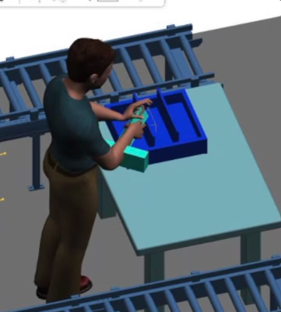
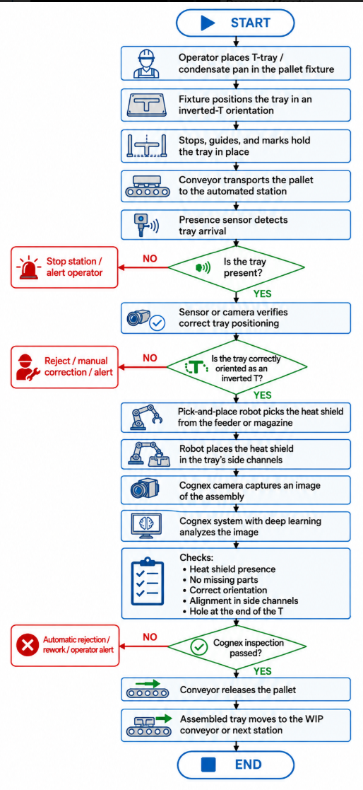
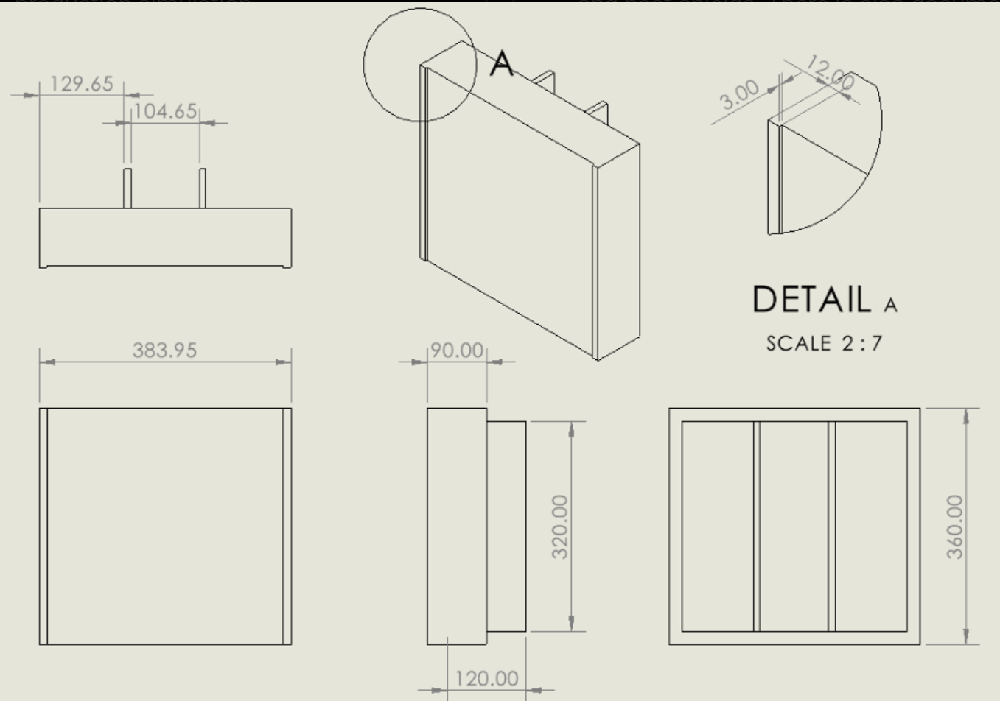
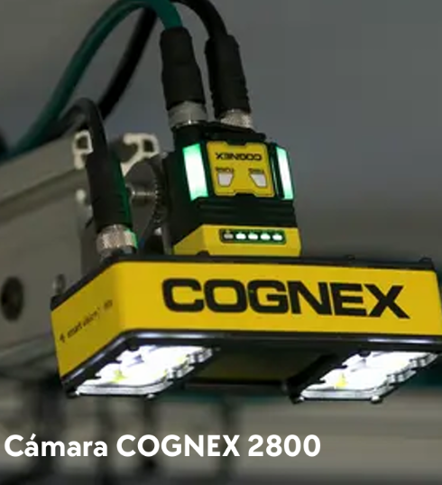
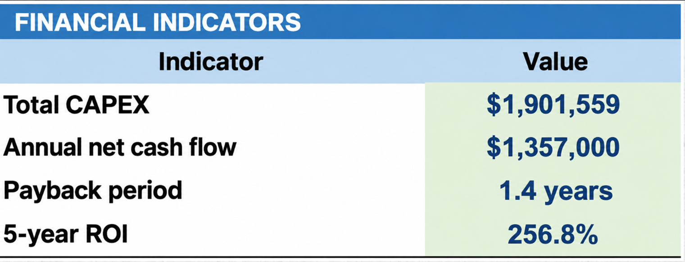

Manufacturing Automation — Carrier SUMCHX-400
Robotic cell design, manufacturing simulation, and feasibility analysis for a tray subassembly process.



PROJECT OVERVIEW
The project focused on one assembly station, not an entire factory. We studied how to automate the movement and positioning of tray components, transfer them between stations, and check each assembly before it moves onward. Our proposal combined robots, a conveyor, camera-based inspection planning, and virtual production models.
THE ENGINEERING CHALLENGE
The existing station depended on repetitive manual handling. Components had to be positioned consistently before inspection and transfer. We wanted to reduce these repeated operations while preserving reliable placement. The reference cycle took 21 seconds per part, equivalent to approximately 171 parts per hour when calculated as a continuous rate.
PROPOSED ROBOTIC CELL
The proposed cell combined a U-shaped conveyor, two UR5e collaborative robots, dedicated fixtures (holders that keep parts in the correct position) carrying three T-shaped tray components, and Cognex In-Sight 2800 cameras for proposed inspections. The operating sequence was:
- Loading: The first robot places three T-shaped components into a dedicated fixture.
- Fixture transfer: Once loaded, the robot transfers the fixture onto the conveyor.
- Position verification: The conveyor moves the fixture through a proposed vision checkpoint to verify component orientation and positioning.
- Heat shield placement: The second robot picks and places a heat shield onto each T-shaped component.
- Final inspection and transfer: The proposed inspection stage checks the completed assemblies before they move to the downstream station or work-in-progress area.
This sequence was intended to make handling and placement more repeatable while reducing the manual work required at the station.

FIXTURE AND GRIPPER CONCEPT
Designed around poka-yoke principles, the fixtures located three components consistently. The gripper concept addressed handling requirements for components, fixtures, and heat shields. Together, the fixture and gripping concepts addressed how parts would be located, held, and transferred throughout the cell.



ROBOT SELECTION
Selected the UR5e using its 5 kg payload, 850 mm reach, and ±0.03 mm specified repeatability to assess suitability for handling and placement within the proposed layout.


PRODUCTION MODELING — PLANT SIMULATION
Compared the baseline process with the proposed model incorporating material buffers, assembly, inspection, and WIP transfer. The configured model used 5.6 seconds per part and produced 643 parts in a one-hour simulation, approximately 3.75× the baseline output. These were simulation results.


PROPOSED MACHINE VISION
Proposed Cognex In-Sight 2800 inspections for component presence, orientation, heat shield placement, and alignment, with failed checks triggering rejection, rework, or operator intervention.


INDUSTRIAL COMMUNICATION CONCEPT
Proposed an EtherNet/IP network connecting a CompactLogix L32E controller with the UR5e robots, Cognex vision system, and 1734-AENTR remote I/O to coordinate cell operations and inspection signals.

ECONOMIC FEASIBILITY
The financial model projected a 1.4-year payback period and 256.8% five-year ROI, based on estimated investment, labor and rework savings, maintenance, and energy costs. These figures were projections under the proposal’s assumptions.


SEQUENCE AND SIMULATION

MY CONTRIBUTION
I developed the conveyor and robotic cell simulation in Siemens Process Simulate, created the UR5e handling sequences, and assessed robot motion, reach, and equipment placement.
My work focused on translating the proposed process into a coordinated virtual sequence: arranging the cell, defining handling operations, and checking whether the robots could reach the required pickup and placement locations.
I also contributed to the team’s production comparison and the presentation of the proposed automation concept.
WHAT I LEARNED
Strengthened my skills in robotic sequencing, workspace assessment, and cell layout, while learning to connect robot feasibility with material flow, production capacity, and economic evaluation.
TOOLS & METHODS